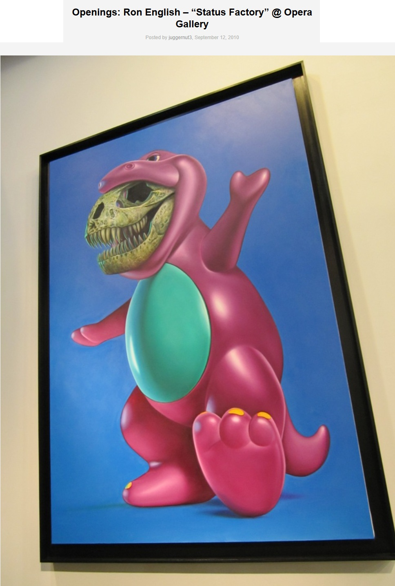
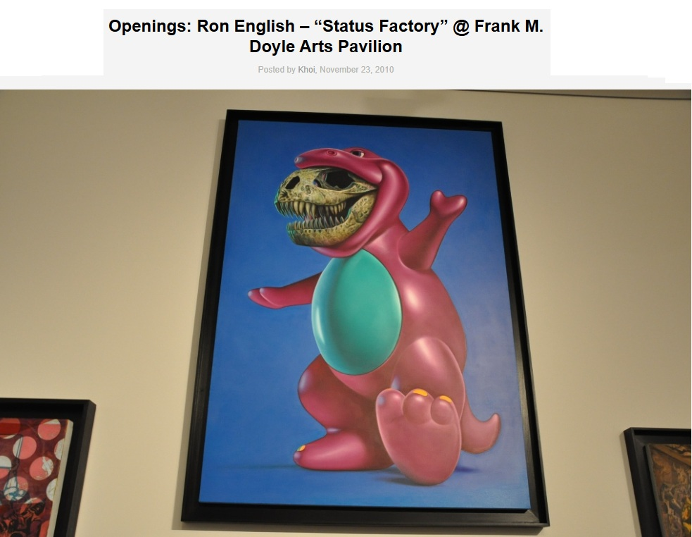
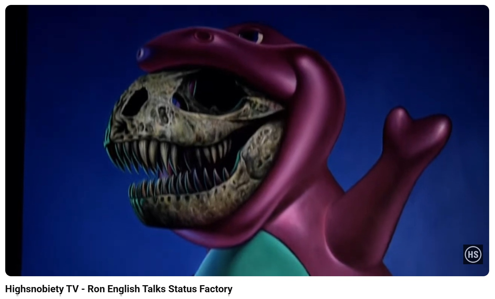
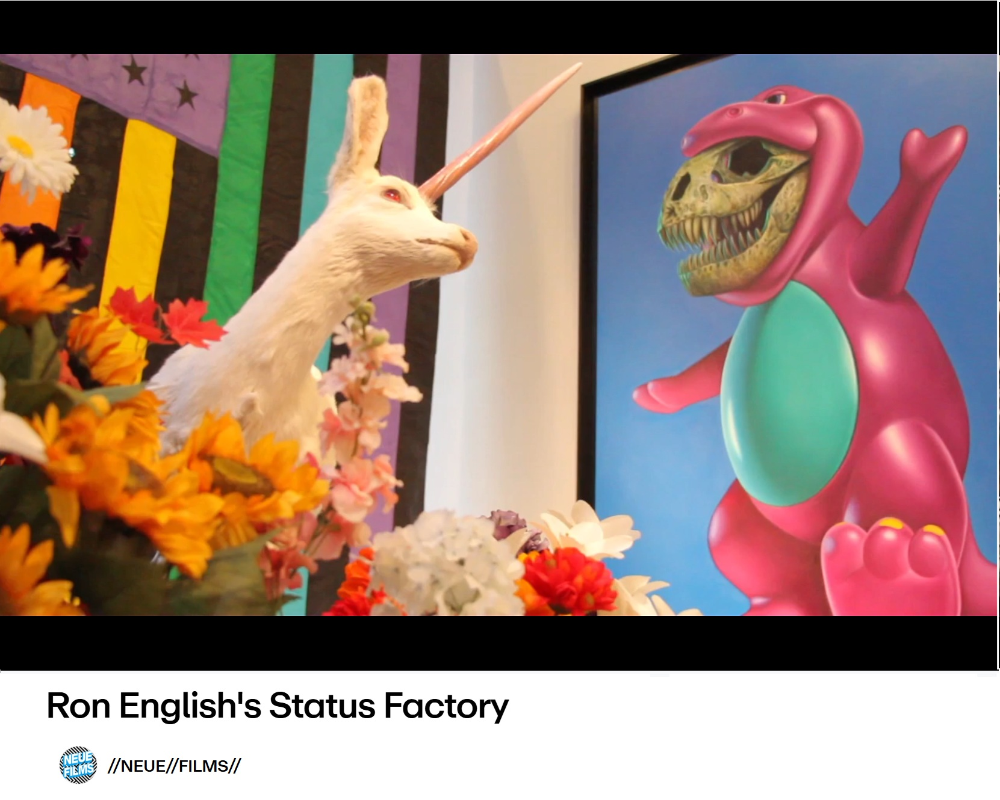

Exhibitions
Status Factory, Opera Gallery, New York, New York, US, September 12–October 29, 2010.
Status Factory – The Art of Ron English, Frank M. Doyle Arts Pavilion (Orange Coast College), Costa Mesa, California, US, November 12–December 17, 2010.
Ron English at Art Wynwood 2019, Eternity Gallery solo booth presentation, Art Wynwood, Miami, Florida, US, February 14–18, 2019.
Literature
Ron English, Death and the Eternal Forever (London: Korero Press, 2014), p. 83. ISBN 978-0957664920.
Ron English, Status Factory: The Art of Ron English (San Francisco: Last Gasp of San Francisco, 2014), p. 21. ISBN 978-0867197891.
Ron English, Original Grin: The Art of Ron English (Paris: Cernunnos, 2019), p. 28. ISBN 978-2374950938.
Notes
Also known as B-Rex’s Inner Carnivore.
This work appears in Arrested Motion’s opening and exhibition photographs for Ron English’s Status Factory at Opera Gallery.
This work also appears in Arrested Motion’s opening and exhibition photographs for Status Factory – The Art of Ron English at Frank M. Doyle Arts Pavilion.
This work appears at 1:51 in Highsnobiety TV’s YouTube video Ron English Talks Status Factory.
This work appears at 1:01 in the Vimeo video Ron English’s Status Factory.
Ancillary Documentation






Selected Online Circulation
Selected examples of the work’s online circulation, reproduction, or discussion. This list is not exhaustive; it is intended to document representative appearances of the image beyond formal exhibition and publication records.